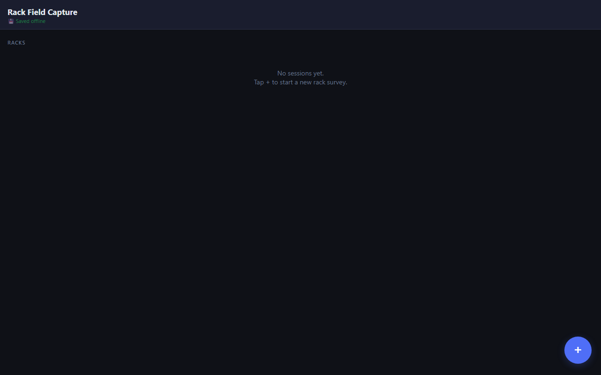
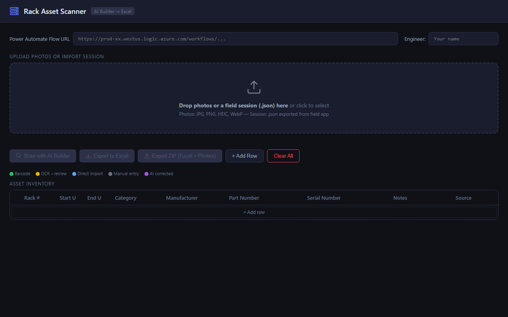
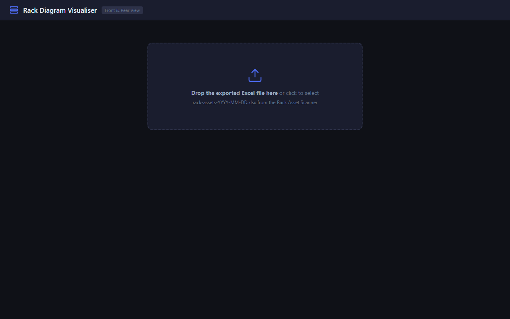

Field Engineer User Guide — Step-by-step instructions for capturing, processing, and visualising rack inventory
How the three tools work together
The Rack Asset Scanner system is a three-step workflow. You use the Field App on your phone to capture photos and barcode scans on-site, then the Desktop Scanner to process those photos with AI and export to Excel, and finally the Rack Diagram Visualiser to generate a visual front/rear diagram of each rack.
No install needed. Everything runs in your browser. Bookmark the field app URL on your phone's home screen for quick access on site.
Capture rack inventory on-site using your phone

Navigate to karenctz.github.io/rack-scanner/field.html in Chrome (Android) or Safari (iPhone). For quickest access, add it to your home screen:
The app works offline once loaded. Your data is saved automatically to the phone — you'll see "💾 Saved offline" flash green at the top after each change.
Tap the blue + button in the bottom-right corner. Enter the rack details:
DC-A-01)Floor 3, Hall B)42)Tap Create. Repeat for each rack you need to document.
Tap on a rack to open it, then tap + Add Item to log each piece of equipment. For each item:
U direction is auto-detected. If you start from U42 (top) the app will decrement each new item's suggested U. If you start from U1 (bottom) it increments. Just enter the first two items and the app figures out the pattern.
Both the Serial Number and Part Number fields have a barcode scan button (the barcode icon on the right). Tap either one to open the camera scanner, which reads 1D and 2D barcodes automatically. When a barcode is detected:
This is especially useful on equipment that has separate S/N and P/N barcodes on the label — you can scan both without typing anything.
Android only: Barcode scanning uses the native Chrome BarcodeDetector API — it works best on Android Chrome. On iPhone you'll need to enter numbers manually or take photos for desktop OCR.
When you've finished logging all racks, go back to the home screen and tap Export All. This creates a .json session file and opens the share sheet so you can:
You'll load this .json file into the Desktop Scanner in the next step.
You can also delete a rack if you made a mistake — scroll to the bottom of any rack page and tap Delete this rack.
Process photos with AI and export the asset inventory to Excel

Open karenctz.github.io/rack-scanner/ on your PC in Chrome or Edge.
Your engineer name appears in the audit log alongside every scan action so it's traceable who processed what.
Drag and drop files into the upload zone, or click to browse. You can load:
Click Scan with AI Builder. The app sends each photo to Microsoft AI Builder (via Power Automate), which reads the text on the equipment labels and extracts:
Results appear in the table row by row as each photo is processed. A progress counter shows how many remain.
OCR results are not always perfect. Always review yellow-dot rows (see confidence indicators below) before exporting.
Each row has a coloured dot showing how reliable the data is:
Click any cell in the table to edit it. Correcting an OCR field changes it to purple and logs the change to the audit trail.
The app automatically flags problems as you work:
If you have data across multiple racks, use the rack filter chips at the top of the table to focus on one rack at a time.
Once you're happy with the data, click one of the export buttons:
.xlsx file with two sheets: Asset Inventory (all rack data) and Audit Log (full action history).zip containing the Excel file plus all the original photos, organised by rackThe export validates your data first. If any rows are missing a Rack # or Serial Number, you'll see a warning asking you to fix them before continuing.
If you need to add items that don't have photos or barcodes:
Generate front & rear visual diagrams from the exported Excel file

Open karenctz.github.io/rack-scanner/rack-diagram.html on your PC.
Drag and drop the rack-assets-YYYY-MM-DD.xlsx file exported from the Desktop Scanner onto the upload zone, or click to browse for it.
The visualiser reads the Asset Inventory sheet and automatically groups equipment by rack.
One section appears per rack, showing:
Category colours used:
Hover over any item in the diagram to see a tooltip with the full details: Serial Number, Part Number, Manufacturer, and U position.
Click the Print button in the top-right corner. This opens the print dialog where you can:
The print layout uses a clean white background optimised for paper or PDF.
If your rack is not 42U, use the Rack Height dropdown (24U / 36U / 42U / 48U) to match your actual racks. You can also adjust the px per U setting to make the diagram taller or shorter.
Common questions and how to resolve them
| Step | Tool | Action | Output |
|---|---|---|---|
| 1 | 📱 Field App | Photograph labels, scan barcodes, fill in details | .json session file |
| 2 | 🖥️ Desktop Scanner | Import session + run AI OCR, review & correct | .xlsx + .zip |
| 3 | 📊 Rack Diagram | Drop the Excel file, view front + rear diagrams | Print / PDF |